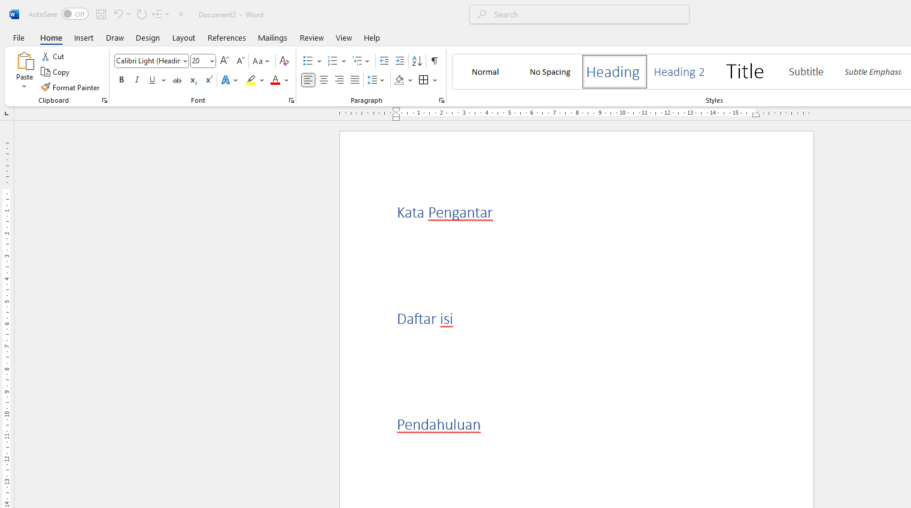
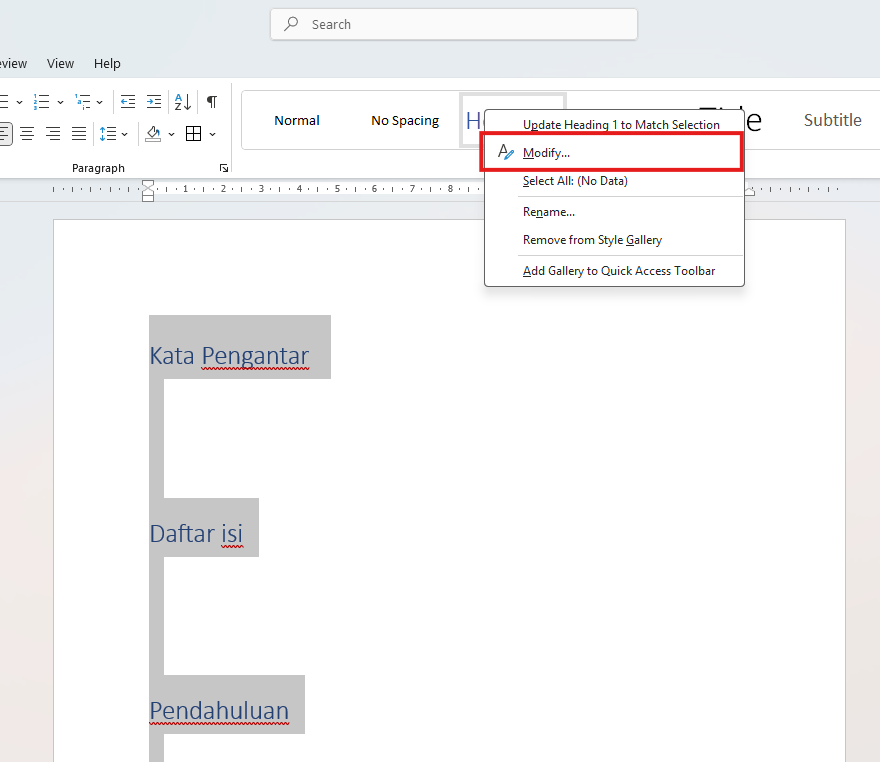
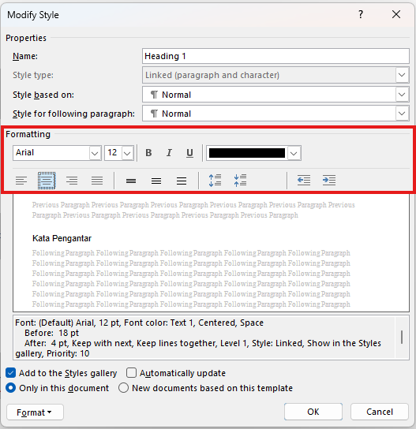
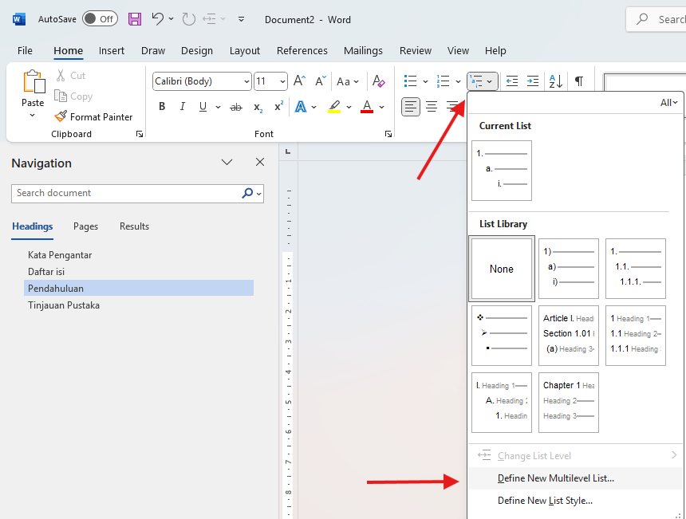
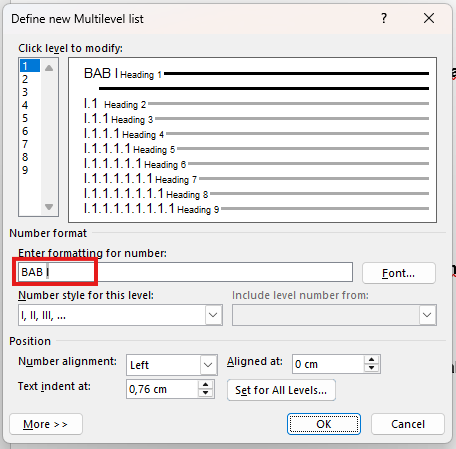
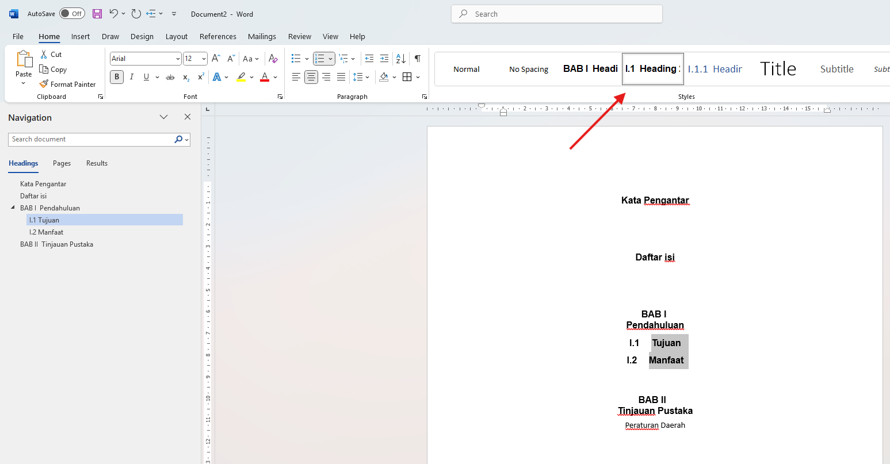
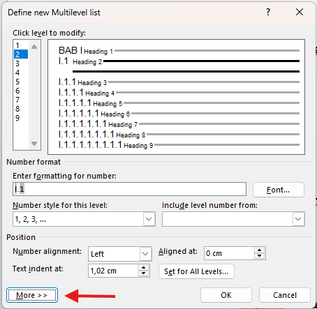
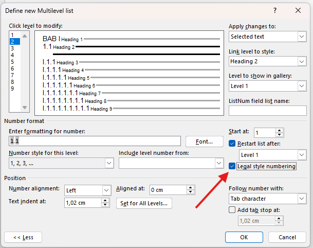
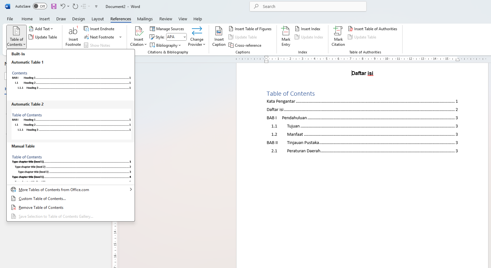

Penjelasan Masalah
Pengaturan heading bukan hal yang wajib dalam penyusunan dokumen berupa laporan, namun menentukan heading untuk setiap bab dan subbab dapat memudahkan dalam hal navigasi dan tata letak dokumen.
Langkah Penyelesaian
- Pertama-tama kita harus menentukan judul dokuman serta bab yang akan dikategorikan sebagai heading
- Kemudia pilih teks yang ingin dijadikan heading seperti kata pengantar atau setiap judul bab, pada sebuah dokumen. Setelah itu pada tab home, dan style pilih heading 1/heading. 
- Anda juga dapat format penulisan heading dengan klik kanan pada mouse kemudian pilih Modify... 
- Pada opsi Modify anda bisa mengubah format seluruh heading, mulai dari font, ukuran, warna dan lain sebagainya. 
- Kemudian untuk menambahkan penomoran pada bab secara otomatis bisa melalui tab home, paragraph, kemudian multilevel list. 
- Format dapat menyeduaikan seperti pada gambar dibawah pastikan memberikan "BAB" pada bagian enter formating for number agar bab otomatis tertulis, sesuaikan juga dengan style number yang diperlukan kemudian tekan okay. 
- Selanjutnya untuk menambahkan subbab, tambahkan terlebih dahulu teks yang ingin dijadikan sub bab jika sudah pilih teks tersebut dan pilih heading 2/ 1.1 heading pada tab home, style dan jangan lupa untuk Modify format heading sesuai kebutuhan. 
- Kemudian untuk menyeduaikan penomoran subbab, buka tab define new multilevel list lagi, tekan more pada pojok kiri bawah, dan centang pada legal style numbering untuk Format penomoran romawi.  
- Langkah terakhir adalah menambahkan daftar isi, caranya yaitu pilih tab Reference dan pilih table of content pilih format daftar isi sesuai selera anda. 
- Daftar isi tersebut akan menyesuikan dengan heading yang dusah dimasukkan.